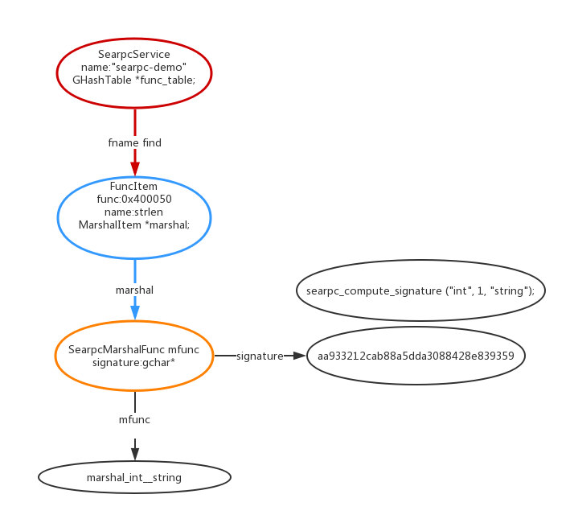

searpc的实现
searpc是一个C语言的库，基于glib系统，searpc只处理序列号和反序列化，传输的工作留给了使用者。
序列号和反序列化使用json（json-glib库），当客户端调用一个rpc会返回一个序列号的json对象。
在server端定义的每个rpc函数都需要携带一个GError参数表示此次调用是否出错，返回的数据包含了以下参数1
2
3
4
5{
ret:"",
error_code:"",
err_msg:""
}
searpc使用的数据结构分析
1 | //用来存储序列化函数 key signature value 具体序列化函数 |
其中有两个头文件是通过编译的时候通过python生成的 searpc-marshal.h searpc-signature.h
searpc-marshal的是序列化的时候具体的实现
searpc-signature是用来计算marsha的signatrue的
1 | //searpc-marshal.h |
1 | //searpc-signature.h |
下图就是一个具体的Service包含的数据,如何定位其他数据也在里面了。

客户端调用rpc的时候数据是组装成什么样的格式发送给服务端呢？
以下面的举例1
2
3
4
5
6
7
8
9
10
11
12
13
14
15
16
17
18
19
20
21
22
23
24
25
26
27
28
29
30
31
32
33
34
35
36
37
38
39
40
41
42
43
44
45
46
47
48
49
50
51
52
53
54
55
56
57
58
59
60
61
62
63
64
65
66
67
68
69
70
71
72
73
74
75
76
77
78
79
80
81
82
83
84
85
86
87
88
89
90
91GList *ans=searpc_client_call__objlist(rpc_client, "searpc_objlisttest",
TEST_OBJECT_TYPE, &error, 3,
"int", count,
"int", len,
"string", str);
GList*
searpc_client_call__objlist (SearpcClient *client, const char *fname,
GType object_type,
GError **error, int n_params, ...)
{
g_return_val_if_fail (fname != NULL, NULL);
g_return_val_if_fail (object_type != 0, NULL);
va_list args;
gsize len, ret_len;
char *fstr;
va_start (args, n_params);
fstr = fcall_to_str (fname, n_params, args, &len);
va_end (args);
if (!fstr) {
g_set_error (error, DFT_DOMAIN, 0, "Invalid Parameter");
return NULL;
}
char *fret = searpc_client_transport_send (client, fstr, len, &ret_len);
if (!fret) {
g_free (fstr);
g_set_error (error, DFT_DOMAIN, TRANSPORT_ERROR_CODE, TRANSPORT_ERROR);
return NULL;
}
GList *ret = searpc_client_fret__objlist (object_type, fret, ret_len, error);
g_free (fstr);
g_free (fret);
return ret;
}
//主要是这个函数进行了json转换
static char *
fcall_to_str (const char *fname, int n_params, va_list args, gsize *len)
{
json_t *array;
array = json_array ();
json_array_append_new (array, json_string(fname));
int i = 0;
for (; i < n_params; i++) {
const char *type = va_arg(args, const char *);
void *value = va_arg(args, void *);
if (strcmp(type, "int") == 0)
json_array_append_new (array, json_integer ((int)(long)value));
else if (strcmp(type, "int64") == 0)
json_array_append_new (array, json_integer (*((gint64 *)value)));
else if (strcmp(type, "string") == 0)
json_array_add_string_or_null_element (array, (char *)value);
else if (strcmp(type, "json") == 0)
json_array_add_json_or_null_element (array, (const json_t *)value);
else {
g_warning ("unrecognized parameter type %s\n", type);
return NULL;
}
}
char *data = json_dumps (array,JSON_COMPACT);
*len = strlen (data);
json_decref(array);
return data;
}
void test_call(const char* fname, int n_params, ...) {
va_list args;
gsize len, ret_len;
char *fstr;
va_start(args, n_params);
fstr = fcall_to_str(fname, n_params, args, &len);
va_end(args);
printf("%s\n", fstr);
}
test_call( "searpc_objlisttest", 3, "int", 11, "int", 4, "string", "A rpc test.");
发送给服务端的数据 ["searpc_objlisttest",11,4,"A rpc test."]
1 | static char * |
1:服务端是如何把客户端传来的数据填充到调用的函数的呢？
2:服务端如何数据组装返回给客户端呢?
3:同时如果返回的是一个GObject类型的数据如何反序列化和序列化呢？
问题1：
通过rpc_table.py中定义的函数返回类型和参数，将参数解析出来生成一个又一个mashal函数来填充进去然后生成searpc-marshal.h文件避免手动添加函数
问题2:
以如下函数为例子1
2
3
4
5
6
7
8
9
10
11
12
13
14
15
16
17
18
19
20
21
22
23
24
25
26
27
28
29
30
31
32
33
34
35
36
37
38
39
40
41
42
43
44
45
46
47
48
49
50
51
52
53
54
55
56
57
58
59
60
61
62
63
64
65
66
67
68
69
70
71
72
73
74
75
76
77
78
79
80
81
82
83
84
85
86
87
88
89
90
91
92
93
94
95
96
97
98
99
100
101
102
103
104
105
106
107
108
109
110
111
112
113
114
115
116
117
118
119
120
121
122
123
124
125
126
127
128
129
130
131
132
133
134
135
136
137
138
139
140
141
142
143
144
145
146
147
148
149
150
151
152
153
154
155
//结构体如下
struct _TestObject {
GObject parent;
int len;
gchar *str;
gboolean equal;
};
void test_ret() {
GError *error = NULL;
gsize ret_len;
int count = 4, len = 11;
char hstr[16] = "A rpc test.";
//模拟数据
GList* ret = searpc_objlisttest(count, len, hstr);
json_t *object = json_object();
//重点
searpc_set_objlist_to_ret_object(object, ret);
//添加ret 和判断是否出错加error进去
char* str = searpc_marshal_set_ret_common(object, &ret_len, error);
printf("%s\n", str);
}
void
searpc_set_objlist_to_ret_object (json_t *object, GList *ret)
{
GList *ptr;
if (ret == NULL)
json_object_set_new (object, "ret", json_null ());
else {
json_t *array = json_array ();
for (ptr = ret; ptr; ptr = ptr->next)
//json_gobject_serialize 重点
json_array_append_new (array, json_gobject_serialize (ptr->data));
json_object_set_new (object, "ret", array);
for (ptr = ret; ptr; ptr = ptr->next)
g_object_unref (ptr->data);
g_list_free (ret);
}
}
json_t *json_gobject_serialize (GObject *gobject)
{
json_t *object = json_object();
GParamSpec **pspecs;
guint n_pspecs, i;
pspecs = g_object_class_list_properties (G_OBJECT_GET_CLASS (gobject), &n_pspecs);
for (i=0; i!=n_pspecs; ++i) {
json_t *node;
//通过gobject特效来实现，感觉像是反射
GParamSpec *pspec = pspecs[i];
GValue value = { 0, };
//结构体名称和数据都能获取了
g_value_init (&value, G_PARAM_SPEC_VALUE_TYPE (pspec));
g_object_get_property(gobject, pspec->name, &value);
//获取具体数据
node=json_serialize_pspec (&value);
if (node)
json_object_set_new (object, pspec->name, node);
g_value_unset (&value);
}
g_free (pspecs);
return object;
}
static json_t *json_serialize_pspec (const GValue *value)
{
/* Only types in json-glib but G_TYPE_BOXED */
switch (G_TYPE_FUNDAMENTAL (G_VALUE_TYPE (value))) {
case G_TYPE_STRING:
if (!g_value_get_string (value))
break;
else
return json_string (g_value_get_string (value));
case G_TYPE_BOOLEAN:
if (g_value_get_boolean (value))
return json_true ();
else return json_false ();
case G_TYPE_INT:
return json_integer (g_value_get_int (value));
case G_TYPE_UINT:
return json_integer (g_value_get_uint (value));
case G_TYPE_LONG:
return json_integer (g_value_get_long (value));
case G_TYPE_ULONG:
return json_integer (g_value_get_ulong (value));
case G_TYPE_INT64:
return json_integer (g_value_get_int64 (value));
case G_TYPE_FLOAT:
return json_real (g_value_get_float (value));
case G_TYPE_DOUBLE:
return json_real (g_value_get_double (value));
case G_TYPE_CHAR:
return json_integer (g_value_get_schar (value));
case G_TYPE_UCHAR:
return json_integer (g_value_get_uchar (value));
case G_TYPE_ENUM:
return json_integer (g_value_get_enum (value));
case G_TYPE_FLAGS:
return json_integer (g_value_get_flags (value));
case G_TYPE_NONE:
break;
case G_TYPE_OBJECT:
{
GObject *object = g_value_get_object (value);
if (object)
return json_gobject_serialize (object);
}
break;
default:
g_warning("Unsuppoted type `%s'",g_type_name (G_VALUE_TYPE (value)));
}
return json_null();
}
//通过上面就会返回一个序列化的json如下所示
{
"ret": [{
"len": 11,
"str": "A rpc test.",
"equal": true
}, {
"len": 11,
"str": "A rpc test.",
"equal": true
}, {
"len": 11,
"str": "A rpc test.",
"equal": true
}, {
"len": 11,
"str": "A rpc test.",
"equal": true
}]
}
客户端如何反序列化呢？
1 |
|